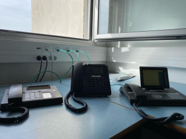

Compétence : Téléphonie
Découverte de la téléphonie

- Missions :
- Restauration et configuration d'un serveur d'appel.
- Câblage des téléphones avec des switches PoE.
- Configuration des téléphones IP et SIP.
- Configuration des abonnés sur le serveur d'appel.
- Configuration du softphone Xlite.
- Analyse d'un échange téléphonique avec le logiciel Wireshark.
- Configuration du Trunk SIP.
- Configuration du renvoi d'appel et de la messagerie.
- Découverte du logiciel MyPortal.